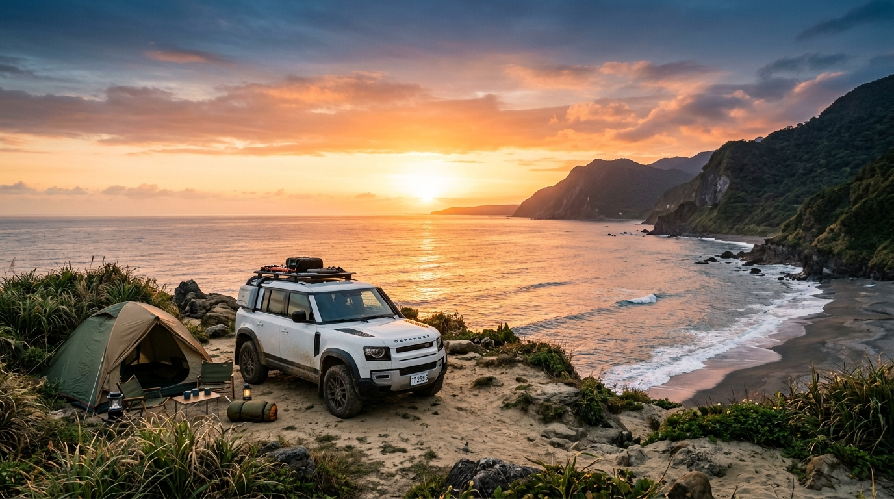

提案一：台東太平洋「車宿 / 野營」迎日出

食衣住行規劃
食： 預算 4,000 元 (在地小吃、原住民風味餐、或是買食材回營地自炊)。
衣： 海邊風大，防風外套必備；帶上玩沙玩水的替換衣物與涼鞋。
住： 預算 2,500 元 (尋找有衛浴的平價海景營地，付營位費睡車上或搭帳篷，平均一晚 800)。
行： 預算 3,500 元 (台中走南迴直達台東，油錢與過路費)。
四天行程規劃
Day 1 南迴公路之旅： 台中出發 -> 南迴改 -> 多良車站看海 -> 抵達台東扎營
Day 2 海岸線放電： 營地看日出 -> 加路蘭海岸 -> 三仙台跨海步道 -> 成功漁港吃海鮮
Day 3 縱谷滑草： 拔營轉戰縱谷 -> 鹿野高台滑草 -> 伯朗大道騎單車
Day 4 收心返航： 台東市區買麻糬 -> 沿南迴一路順遊回台中
預算視覺化
活動範圍
提案二：台 61 西濱海線「五星香客大樓」巡禮
食衣住行規劃
食： 預算 4,500 元 (沿海漁港海鮮吃到爽：芳苑烤蚵、東石漁港、台南小吃)。
衣： 輕便夏秋裝，海線風沙較大，帽子需有防風繩，防曬不可少。
住： 預算 3,500 元 (如：南鯤鯓代天府槺榔山莊或鹿港天后宮香客大樓，CP值極高)。
行： 預算 2,000 元 (西濱沿線免過路費，純油資)。
四天行程規劃
Day 1 海牛文化： 台中 -> 彰化芳苑搭牛車採蚵 -> 雲林口湖休息站 -> 嘉義入住
Day 2 鹽田夕照： 東石漁人碼頭玩水玩沙 -> 台南井仔腳瓦盤鹽田看夕陽 -> 南鯤鯓入住
Day 3 歷史生態： 七股鹽山 -> 四草綠色隧道搭船 -> 安平古堡吃豆花
Day 4 嘉南平原： 故宮南院 (小孩放電區) -> 順著台 61 線吹海風回台中
預算視覺化
活動範圍
提案三：國境之南 屏東滿州/旭海 避世探秘

食衣住行規劃
食： 預算 3,500 元 (恆春鎮上平價美食：鴨肉冬粉、綠豆蒜、滿州地方小吃)。
衣： 南部依然溫暖炎熱，準備短袖、防曬衣與好走的步道鞋。
住： 預算 4,000 元 (滿州鄉或恆春鎮外圍的平價家庭民宿/青年旅館)。
行： 預算 2,500 元 (台中直奔屏東最南端，來回油資與過路費)。
四天行程規劃
Day 1 直奔南國： 台中出發 -> 國道3號到底 -> 恆春鎮上吃午餐補給 -> 滿州鄉入住
Day 2 奇岩大漠： 佳樂水看奇岩 -> 九棚大沙漠 (港仔大沙漠) 看海沙奇景 -> 晚上滿州看無光害星空
Day 3 草原迎風： 旭海大草原看無敵海景 -> 龍磐公園 -> 最南端地標打卡
Day 4 海生館遊： 屏東海洋生物博物館 (視預算決定是否購票，或在外圍看海) -> 漫長車程返家